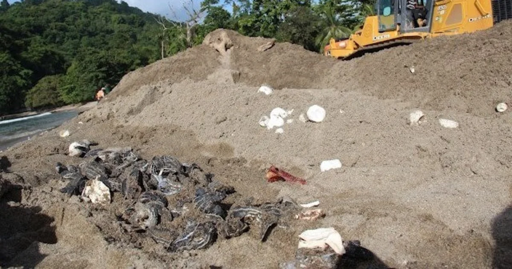

OVERFISHING AND UNLAWFUL TRADE
Both sea turtles and their parts continue to be harvested irresponsibly for human consumption and trade.
Many people throughout the globe rely on turtle meat and eggs as a source of sustenance and income.
Some also slaughter tortoises for medicinal purposes and religious rituals. Each year, tens of thousands
of sea turtles are killed in this manner, decimating populations of the already endangered green and
hawksbill turtles.
Also ongoing is the slaughter of tortoises for both domestic and international markets. The international
trade of all species of sea turtles and their parts is prohibited by the Convention on International
Trade in Endangered Species of Wild Fauna and Flora (CITES), a global agreement regulating or
prohibiting international trade in threatened species. Illegal trafficking continues to exist.
HABITAT LOSS

Nesting sea turtles are dependent on coastlines. Globally, nesting beaches for sea turtles have been
directly destroyed or disturbed by uncontrolled coastal development, vehicular traffic on beaches, and
other human activities. For instance, the lights from roads and buildings disorient hatchlings away
from the ocean, and vehicle traffic on beaches compacts the sediment, preventing female turtles from
digging nests. Turtle feeding grounds, such as coral reefs and seagrass meadows, are harmed and
devastated by onshore activities, such as sedimentation from land clearance and nutrient runoff from
agriculture. Through dredging and sand filling, it has been discovered that beach restoration initiatives
designed to safeguard seaside structures are also detrimental.
CLIMATE CHANGE
Even the sex of progeny is affected by environmental conditions such as temperature during all phases
of a sea turtle's life. As a consequence of climate change-induced abnormally mild temperatures, there
are now fewer male hatchlings.Warmer sea surface temperatures can also result in the loss of vital
foraging grounds for sea turtles, while more intense storms and rising sea levels can decimate and
damage nesting beaches
POLLUTION
Plastic debris that floats in the water can be mistaken by sea turtles for jellyfish, causing them to
suffocate when they attempt to consume it. Frequently, these encounters are catastrophic. Lost or
abandoned fishing gear, known as ghost gear, can entangle sea turtles and cause them to suffocate or
become unable to feed or swim. Litter on coastlines can prevent hatchlings from reaching the ocean by
trapping them. Additionally, oil accidents poison sea turtles of all ages.